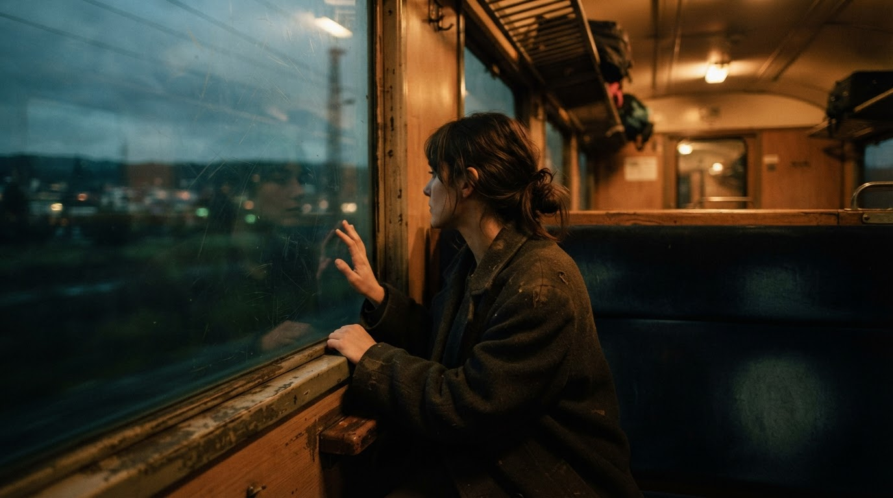
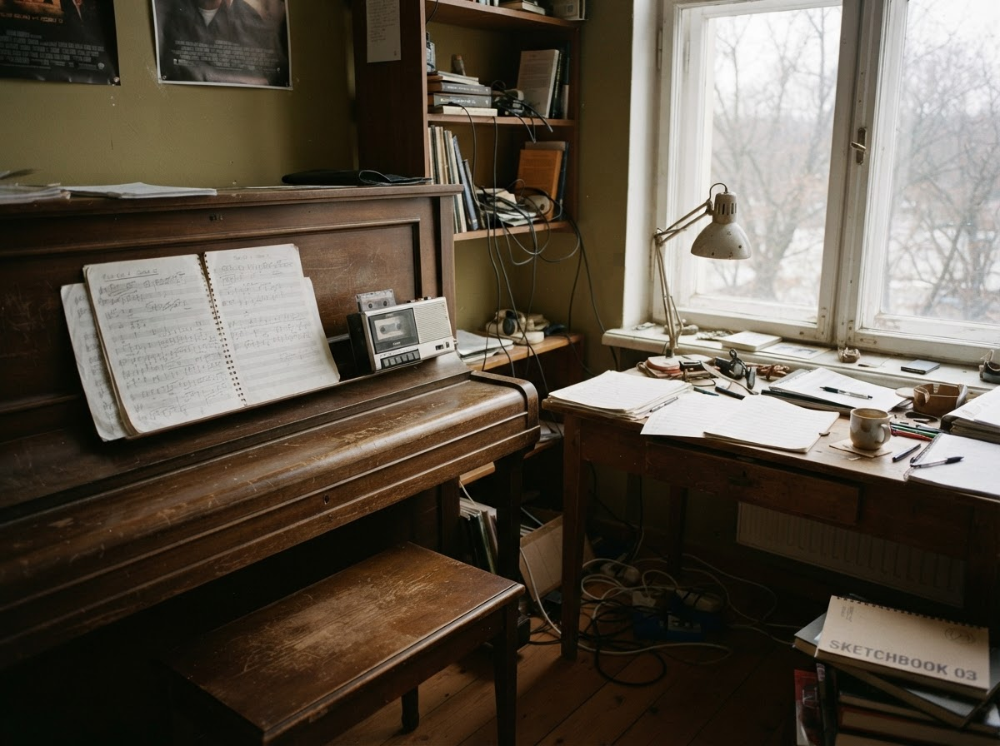
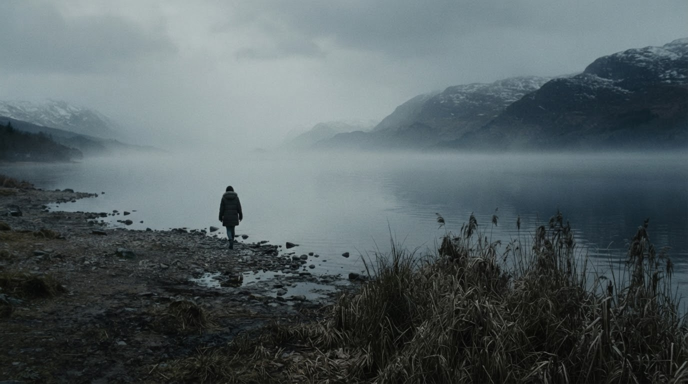
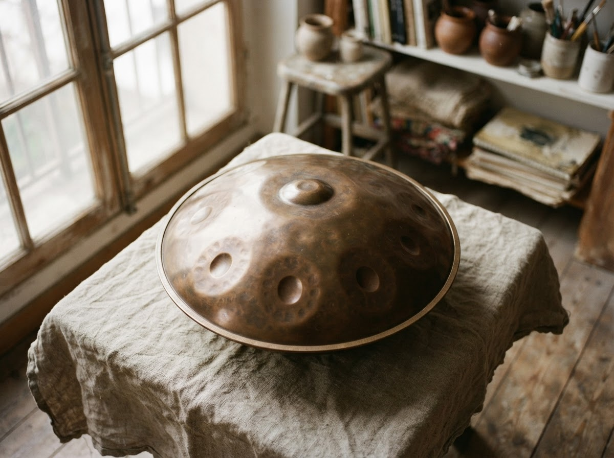
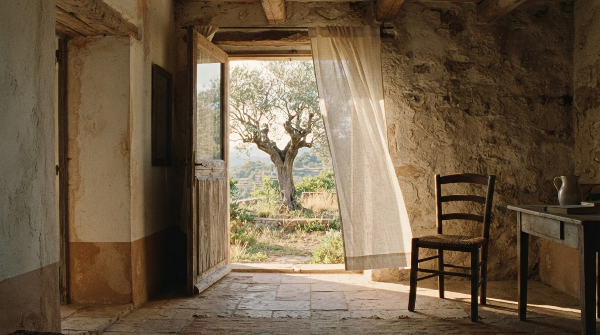
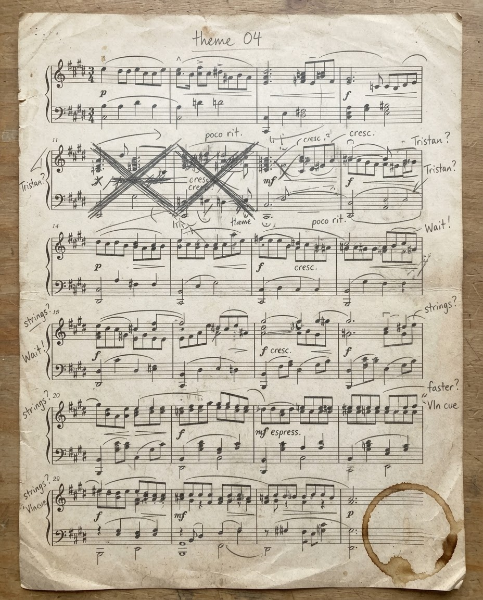

ATAKAN
TEOMAN
DIRECTOR / COMPOSER / HANDPAN
WORKING BETWEEN IMAGE, SOUND
AND THE SPACES IN BETWEEN.






SELECTED FILM
01 / 03“HE KNOWS WHAT[ COLLABORATOR NAME ]
THE IMAGE LEAVES
UNSAID.”
DIRECTOR / SAMPLE TESTIMONIAL
A SLOWER WAY
OF LISTENING
02 / HANDPANHANDPAN / BRONZE & RESONANCE
Sound as a place
to arrive.
Handpan recordings for quiet rooms, moving images, and the moments that do not need to be rushed.
A.T. / 001
RESONANCE
ATAKAN TEOMAN / HANDPANRESONANCE
A.T. / 002
STILL WATER
ATAKAN TEOMAN / HANDPANSTILL WATER
A.T. / 003
EARTH SKETCHES
ATAKAN TEOMAN / HANDPANEARTH SKETCHES
LISTEN CLOSELY
03 / SELECTED RECORDINGSABOUT
AT / PRACTICEBetween image
& instinct.
Atakan Teoman is a director and composer interested in atmosphere, restraint, and the quiet details that stay with us after a scene ends.
His practice moves between short film, original sound, and handpan performance — building worlds one frame and one note at a time.